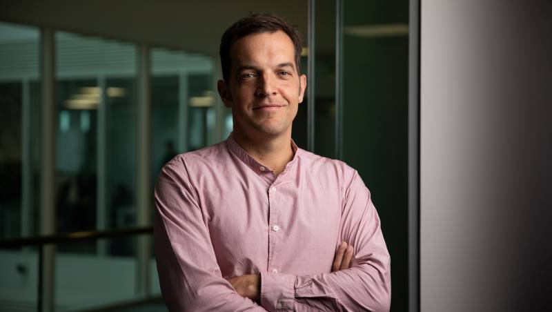

Main | Publications | Teaching | Events
Boris Köpf

About
I am a researcher in the Confidential Computing group at Microsoft Research Cambridge, working on
techniques for tracking information flow in microarchitecture and machine learning systems.
Prior to joining MSR in November 2018, I was a
tenured faculty at the IMDEA Software Institute, a postdoc at the Max
Planck Institute for Software Systems, and a Ph.D. student at ETH
Zurich. I studied mathematics and computer science at the Universidad
de Chile, the Universidade Federal de Campinas, and the University of
Konstanz, from which I received a M.Sc.
Recent Work
Hardware-Software Contracts for Secure Speculation (S&P '21)
[pdf]
Analyzing Information Leakage of Updates to Natural Language Models (CCS '20)
[pdf]
CacheQuery: Learning Replacement Policies from Hardware Caches (PLDI '20)
[pdf]
Spectector: Principled Detection of Speculative Information Flows (S&P '20)
[pdf][www]
Theory and Practice of Finding Eviction Sets (S&P '19)
[pdf]
(more)
Upcoming Events
CSF, IEEE Computer Security Foundations Symposium (SC member)
CHES 2021, IACR Conference on Cryptographic Hardware and Embedded Systems (PC member)
S&P 2021, IEEE Symposium on Security and Privacy (PC member)
PETS 2020, Privacy Enhancing Technologies Symposium (PC member)
(more)
Contact
email: boris.koepf@microsoft.com